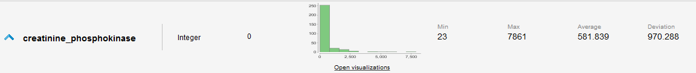
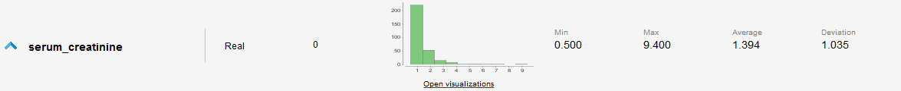
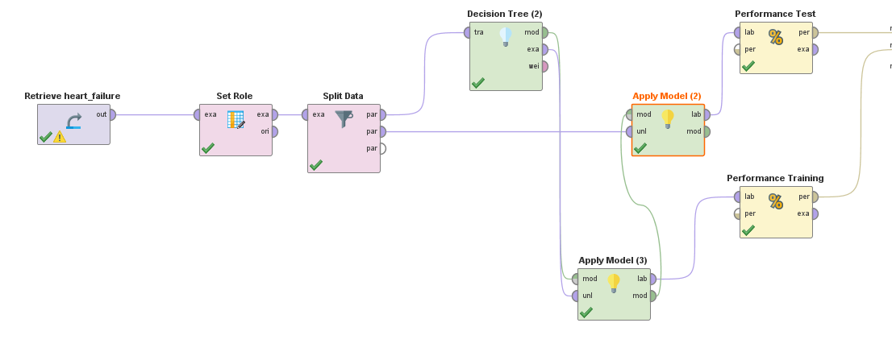
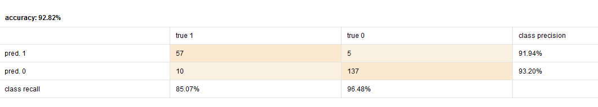
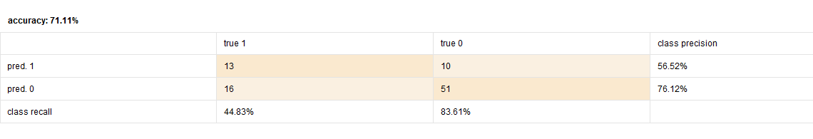

El dataset fue recolectado por la Government College University de Pakistan.
Los atributos que componen el dataset son los siguientes:
Observando los datos en rapid miner se puede ver que la mayoría de los atributos numericos tienen una distribución casi normal(edad, fracción de eyección, sodio sérico, plaquetas) sin observarse valores fuera de lo común sin embargo en los atributos de creatinina fosfoquinasa y creatinina sérica se detecta una distribución exponencial con la mayoria de los valores cercanos a 0.
 
Con respecto a la variable objetivo los resultados dan que 203(aproximadamente un 68%) de los pacientes sobrevive luego de sufrir una insuficiencia cardíaca y los restantes 96(aproximadamente 32%) fallecen dentro del período de seguimiento.
Inicialmente no se descarta ningún atributo al no encontrar ninguno que pueda ser irrelevante para el resultado final. No se detectan datos faltantes. El 70% de los datos se destinan a entrenamiento y el restante 30% a testeo del modelo.


